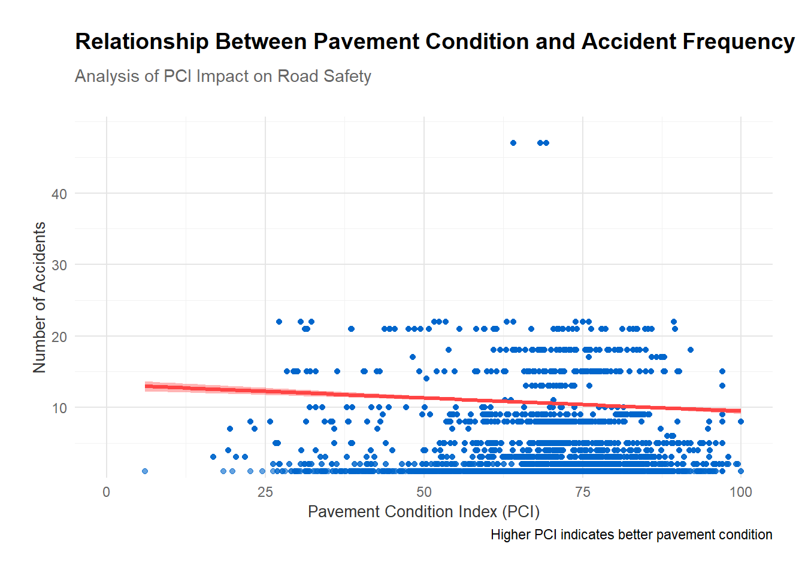

# Merge datasets by standardized road namesmerged_data <- cleaned_dataset %>%left_join(Pavement_Condition_Index, by =c("Road.Name"="StreetName"))
Warning in left_join(., Pavement_Condition_Index, by = c(Road.Name = "StreetName")): Detected an unexpected many-to-many relationship between `x` and `y`.
ℹ Row 5 of `x` matches multiple rows in `y`.
ℹ Row 24360 of `y` matches multiple rows in `x`.
ℹ If a many-to-many relationship is expected, set `relationship =
"many-to-many"` to silence this warning.
# Check for successful joinprint(dim(merged_data))
[1] 11167 53
summary(merged_data)
Report.Number Local.Case.Number Agency.Name ACRS.Report.Type
Length:11167 Length:11167 Length:11167 Length:11167
Class :character Class :character Class :character Class :character
Mode :character Mode :character Mode :character Mode :character
Crash.Date.Time Route.Type Road.Name
Min. :2015-01-17 16:09:00.00 Length:11167 Length:11167
1st Qu.:2023-08-19 19:10:00.00 Class :character Class :character
Median :2023-10-06 07:45:00.00 Mode :character Mode :character
Mean :2023-04-30 17:40:21.15
3rd Qu.:2023-11-17 17:25:00.00
Max. :2023-12-31 11:00:00.00
Cross.Street.Name Off.Road.Description Municipality
Length:11167 Length:11167 Length:11167
Class :character Class :character Class :character
Mode :character Mode :character Mode :character
Related.Non.Motorist Collision.Type Weather Surface.Condition
Length:11167 Length:11167 Length:11167 Length:11167
Class :character Class :character Class :character Class :character
Mode :character Mode :character Mode :character Mode :character
Light Traffic.Control Driver.Substance.Abuse
Length:11167 Length:11167 Length:11167
Class :character Class :character Class :character
Mode :character Mode :character Mode :character
Non.Motorist.Substance.Abuse Person.ID Driver.At.Fault
Length:11167 Length:11167 Length:11167
Class :character Class :character Class :character
Mode :character Mode :character Mode :character
Injury.Severity Circumstance Driver.Distracted.By
Length:11167 Length:11167 Length:11167
Class :character Class :character Class :character
Mode :character Mode :character Mode :character
Drivers.License.State Vehicle.ID Vehicle.Damage.Extent
Length:11167 Length:11167 Length:11167
Class :character Class :character Class :character
Mode :character Mode :character Mode :character
Vehicle.First.Impact.Location Vehicle.Body.Type Vehicle.Movement
Length:11167 Length:11167 Length:11167
Class :character Class :character Class :character
Mode :character Mode :character Mode :character
Vehicle.Going.Dir Speed.Limit Driverless.Vehicle Parked.Vehicle
Length:11167 Min. : 0 Length:11167 Length:11167
Class :character 1st Qu.:30 Class :character Class :character
Mode :character Median :35 Mode :character Mode :character
Mean :34
3rd Qu.:40
Max. :65
Vehicle.Year Vehicle.Make Vehicle.Model Latitude
Min. : 0 Length:11167 Length:11167 Min. :38.74
1st Qu.:2011 Class :character Class :character 1st Qu.:39.05
Median :2015 Mode :character Mode :character Median :39.08
Mean :1991 Mean :39.09
3rd Qu.:2019 3rd Qu.:39.13
Max. :9999 Max. :39.32
Longitude Location the_geom OBJECTID
Min. :-77.55 Length:11167 Length:11167 Min. : 11
1st Qu.:-77.18 Class :character Class :character 1st Qu.: 3383
Median :-77.11 Mode :character Mode :character Median :12436
Mean :-77.12 Mean :11972
3rd Qu.:-77.05 3rd Qu.:20035
Max. :-76.93 Max. :25168
NA's :460
Segment_ID CENSUS_ID DEPOT_NUMB DEPOT_NAME
Min. : 2312 Min. : 2312 Min. :11.00 Length:11167
1st Qu.: 69450 1st Qu.: 69450 1st Qu.:13.00 Class :character
Median :108661 Median :108661 Median :14.00 Mode :character
Mean :103215 Mean :103215 Mean :14.13
3rd Qu.:129678 3rd Qu.:129678 3rd Qu.:15.00
Max. :168168 Max. :168168 Max. :18.00
NA's :460 NA's :460 NA's :460
MOCO_MAINT Shape_Leng FromStreet ToStreet
Length:11167 Min. : 3.813 Length:11167 Length:11167
Class :character 1st Qu.: 264.792 Class :character Class :character
Mode :character Median : 440.190 Mode :character Mode :character
Mean : 566.601
3rd Qu.: 702.607
Max. :7272.388
NA's :460
Length_1 Width SurfaceTyp PCI
Min. : 3.813 Min. :14.00 Length:11167 Min. : 6.059
1st Qu.: 265.400 1st Qu.:24.00 Class :character 1st Qu.: 64.000
Median : 440.300 Median :46.00 Mode :character Median : 71.481
Mean : 566.858 Mean :46.52 Mean : 69.974
3rd Qu.: 702.600 3rd Qu.:64.00 3rd Qu.: 78.745
Max. :7272.400 Max. :98.00 Max. :100.000
NA's :460 NA's :460 NA's :460
# Calculate accident count for each Segment_IDmerged_data <- merged_data %>%group_by(Segment_ID) %>%mutate(accident_count =n()) %>%ungroup()# Filter out NA values and create visualizationfiltered_data <- merged_data %>%filter(!is.na(PCI))if (nrow(filtered_data) >0) {ggplot(filtered_data, aes(x = PCI, y = accident_count)) +# Add points with slight transparency for better overlap visibilitygeom_point(color ="#0066CC", alpha =0.6, size =1.5) +# Add smoothed line with confidence intervalgeom_smooth(method ="lm", color ="#FF4444", size =1.2,se =TRUE, # Show confidence intervalfill ="#FF444433") +# Semi-transparent confidence interval# Customize labels and titlelabs(title ="Relationship Between Pavement Condition and Accident Frequency",subtitle ="Analysis of PCI Impact on Road Safety",x ="Pavement Condition Index (PCI)",y ="Number of Accidents",caption ="Higher PCI indicates better pavement condition" ) +# Enhanced theme with better grid and formattingtheme_minimal() +theme(# Title formattingplot.title =element_text(size =14, face ="bold", margin =margin(b =10)),plot.subtitle =element_text(size =11, color ="gray40", margin =margin(b =20)),# Axis formattingaxis.title =element_text(size =10, color ="gray20"),axis.text =element_text(size =9, color ="gray40"),# Grid formattingpanel.grid.major =element_line(color ="gray90"),panel.grid.minor =element_line(color ="gray95"),# Add padding around plotplot.margin =margin(20, 20, 20, 20) ) +# Set appropriate scale breaksscale_y_continuous(breaks =seq(0, max(filtered_data$accident_count), by =10),expand =expansion(mult =c(0.02, 0.08)) ) +scale_x_continuous(breaks =seq(0, 100, by =25),limits =c(0, 100) )}
Warning: Using `size` aesthetic for lines was deprecated in ggplot2 3.4.0.
ℹ Please use `linewidth` instead.
`geom_smooth()` using formula = 'y ~ x'

# Perform stratified analysis by Traffic.Controlif ("Traffic.Control"%in%names(merged_data)) { merged_data %>%group_by(Traffic.Control) %>%summarize(avg_accidents =mean(accident_count, na.rm =TRUE),avg_pci =mean(PCI, na.rm =TRUE),.groups ="drop" ) %>%print()} else {message("Traffic.Control column not found in merged_data.")}
# A tibble: 9 × 3
Traffic.Control avg_accidents avg_pci
<chr> <dbl> <dbl>
1 FLASHING TRAFFIC SIGNAL 30.9 67.9
2 N/A 36.9 70.4
3 NO CONTROLS 31.4 69.3
4 OTHER 41.4 72.2
5 PERSON 7.05 66.0
6 STOP SIGN 21.6 70.4
7 TRAFFIC SIGNAL 26.5 70.4
8 UNKNOWN 40.3 69.5
9 YIELD SIGN 14.8 68.1
# Create geo_analysis from merged_datageo_analysis <- merged_data %>%filter(!is.na(PCI)) %>%# Filter rows with valid PCIgroup_by(Segment_ID) %>%# Group by Segment_ID or other grouping variablesummarize(avg_pci =mean(PCI, na.rm =TRUE), # Average PCIaccident_count =sum(accident_count), # Total accident count.groups ="drop" )
summary(geo_analysis)
Segment_ID avg_pci accident_count
Min. : 2312 Min. : 6.059 Min. : 1.00
1st Qu.: 58375 1st Qu.: 63.125 1st Qu.: 1.00
Median :105535 Median : 71.653 Median : 4.00
Mean : 90139 Mean : 69.969 Mean : 42.29
3rd Qu.:119314 3rd Qu.: 79.216 3rd Qu.: 25.00
Max. :168168 Max. :100.000 Max. :2209.00